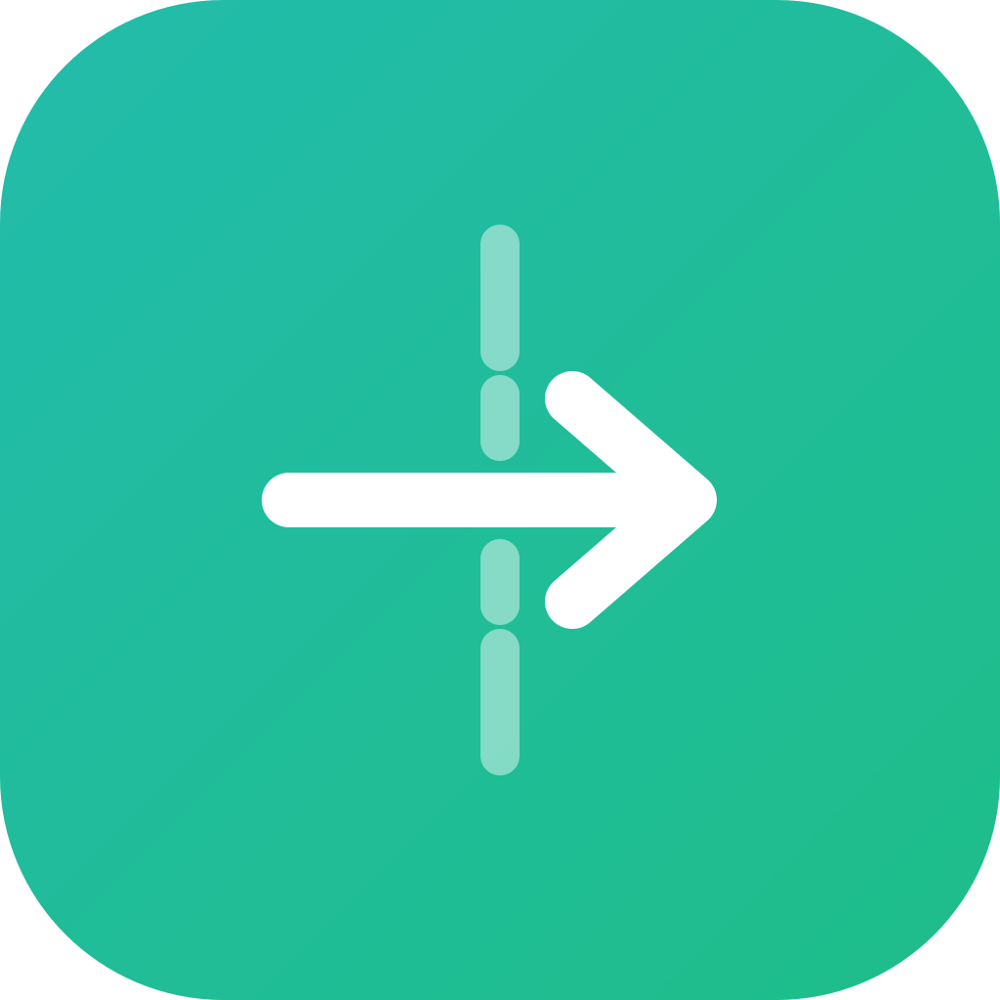

Сравни 4 варианта. Большая = в Finder/доке, маленькие справа = как читается мелко (важно для трея). Скажи букву.
AЩит + пульс
Защита трафика. Щит с линией-пульсом — «данные идут под защитой». Сине-индиговый градиент.

BСтрела сквозь барьер
Прямая метафора обхода DPI: стрелка пробивает разрыв в «стене» блокировки. Бирюзово-зелёный.
CОткрытый замок
Разблокировка — открытый навесной замок. Фиолетово-розовый градиент.
DСигнал сквозь цензуру
Сигнал-волны проходят сквозь барьер (амбер → белый на тёмном). Технологичнее, темнее.